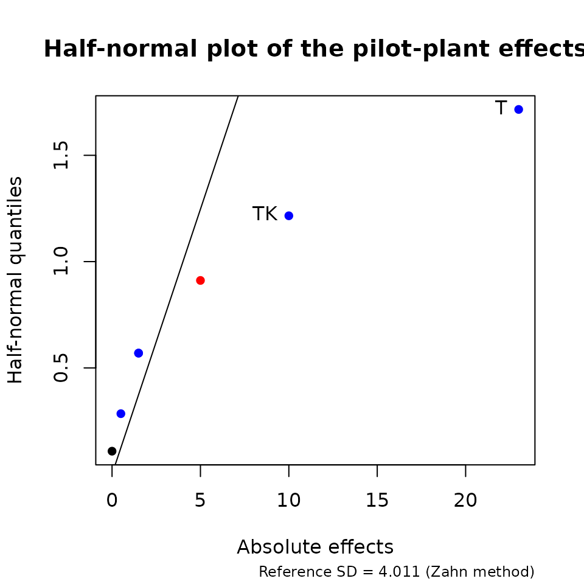
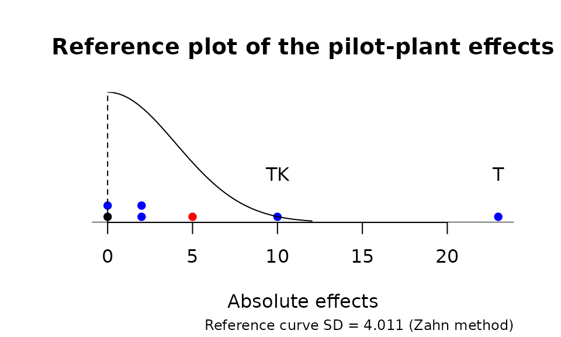
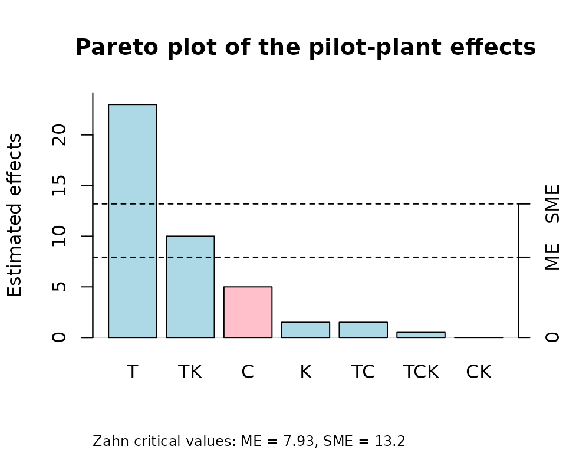
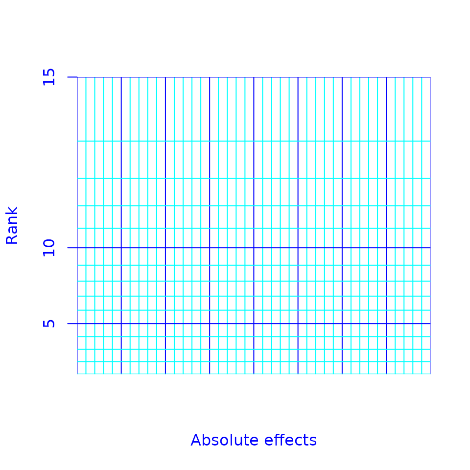

**unrepx** package for R
Analysis of unreplicated experiments
Russ Lenth
Version 1.0.3 – 2024-06-09
Source:vignettes/overview.Rmd
overview.RmdIntroduction
The unrepx package provides much of what one needs to analyze basic unreplicated screening experiments such as two-level factorial and fractional factorial designs, in which one has a set of independent effect estimates but no degrees of freedom for error. The analyses are based on these underlying assumptions about the effect estimates:
- They are independent
- They all have the same variance
- They are normally distributed
- Many of the effects are inactive (negligible), while a minority of them are active (non-negligible). This requirement is known as the effect-sparsity assumption.
The first and last of these are the most important. There are several cases in which effects are not independent – among them Plackett-Burman designs and definitive screening designs – for which other software is needed. And without the effect-sparsity assumption, one needs replications, or some other assumption, in order to assess which effects are likely to be active.
This document provides an overview and a few examples. The user should consult the help pages for details and finer points.
Estimating effects
The functions yates() and gyates() allow
estimation of effects without also providing a design matrix. Instead,
the response values must be arranged in standard order, whereby the
first factor varies the fastest, the second the second fastest, and so
on. See help("yates") for details on these functions, as
well as literature references.
As an example, consider the pilot-plant example given in the text by Box, Hunter, and Hunter (2nd ed.), page 177. The experiment involves three factors T, C, and K, each having two levels. Here we estimate the effects of these factors on process yield, by providing the response values in standard order (as presented in the text):
## Loading required package: unrepx## T C TC K TK CK TCK
## 23.0 -5.0 1.5 1.5 10.0 0.0 0.5
## attr(,"mean")
##
## 64.25Note there are 7 effects from the 8 experimental runs; the mean is added as an attribute.
The yates() and gyates() functions can also
reverse themselves and produce the original response values, given the
effects. They decide which to do based on the length of the data
provided.
yates(pilotEff)## --- +-- -+- ++- --+ +-+ -++ +++
## 60 72 54 68 52 83 45 80Graphical analyses
unrepx provides three graphical tools for helping to identify active effects: [half]-normal plots, reference plots, and Pareto plots.
Half-normal and normal plots are available via hnplot()
(see details in its help page). Here is a half-normal plot of the
effects we just computed, with labels added for all those that exceed
10:

By default, a reference line is added (see the section below on statistics for details). The dots are colored blue for positive and red for negative effects. Visually, it appears that the T and TK effects are the most active, as they appear to be outliers. Ordinary normal plots are possible too, but we strongly discourage using them as they can be misleading.
A reference plot is a dotplot of the effects, along with a reference curve. By default, the absolute effects are plotted along with a half-normal curve:

As a by-product, a general-purpose dot.plot function is
also provided. These plots are resizeable in both directions: with a
vertical resize, the dots are re-stacked with the correct spacing; and
with a horizontal resize, the dots may be re-binned.
Pareto plots are produced using parplot(). The plot is a
bar graph with the bars ordered by the size of the effect. In addition,
cutoff line(s) are added for the margin of error (ME) and the
simultaneous margin of error (SME) of the effects (see the section below
on statistics).

Statistics
You may have noticed that all of the plots we have seen are enhanced
by lines or curves that help to identify active effects. This is done
via a pseudo-standard-error estimate. The effect-sparsity and
equal-variances assumptions suggests that an estimate of the standard
error of the effects may be obtained by looking at the variability of
the smaller effects. The PSE() function calculates these
estimates.
PSE(pilotEff)## Zahn_PSE
## 4.011005
PSE(pilotEff, method = "Lenth")## Lenth_PSE
## 2.25See help("PSE") for a list of the available methods. The
default Zahn method is based on the slope of a line through the origin
fitted to the smallest 2/3 of the points in the half-normal plot.
For any PSE estimate, one can compute a t-like statistic via
dividing the effect estimate by the PSE. In turn, there is an associated
reference distribution that can be estimated by simulating the
t statistics for independent inactive effects. (It can be
accessed if you like via the ref.dist() function; see its
help page. Ordinarily, though, the needed simulations are done – and
stored – in the background as needed.) A high percentile (typically the
95th) of the reference distribution of |t| provides a critical
value. This critical value, multiplied by the PSE, gives a margin of
error for assessing the effects. This value is used in obtaining
the cutoff line labeled “ME” in the Pareto plot.
If one instead uses instead the distribution of max|t| from each simulated set of effects, the simultaneous margin of error (SME) results. The idea here is that if it happens that all of the effects are inactive, it is unlikely for any of their |t| ratios to exceed the SME. This, if we observe some effects that do, it is pretty convincing evidence that we do indeed have active effects in the mix. And that is the case with our pilot-plant example, as you can see in the Pareto plot above.
A non-graphical analysis showing all of these observed t
ratios, along with P values obtained as tail areas of the
reference distribution, is available via eff.test():
eff.test(pilotEff)## effect Zahn_PSE t.ratio p.value simult.pval
## T 23.0 4.011005 5.734 0.0008 0.0054
## TK 10.0 4.011005 2.493 0.0235 0.1419
## C -5.0 4.011005 -1.247 0.1632 0.7643
## K 1.5 4.011005 0.374 0.7386 1.0000
## TC 1.5 4.011005 0.374 0.7386 1.0000
## TCK 0.5 4.011005 0.125 0.9152 1.0000
## CK 0.0 4.011005 0.000 1.0000 1.0000Other features
Several sets of example effects are provided in the package:
"bikeEff"“, "pdEff"”, "shnkEff",
"shnkDisp"“, and "viseEff" (see
help("bikeEff") for details).
Finally, if there is anyone wishing to construct half-normal plots by
hand, as originally done in Daniel’s 1959 paper, the
daniel.paper() function provides suitable graph paper for
the purpose.
daniel.paper(15)